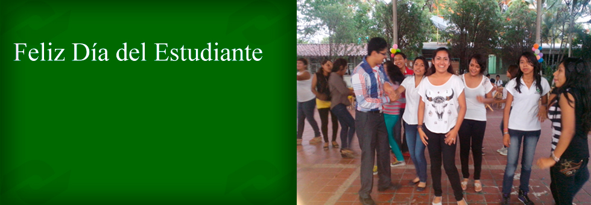
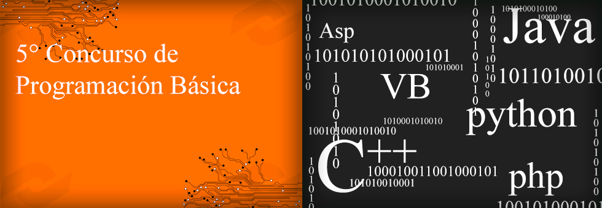
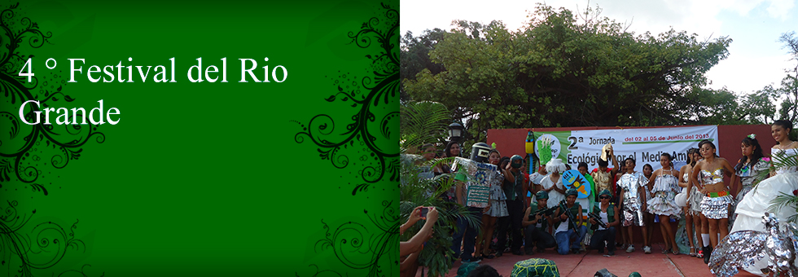
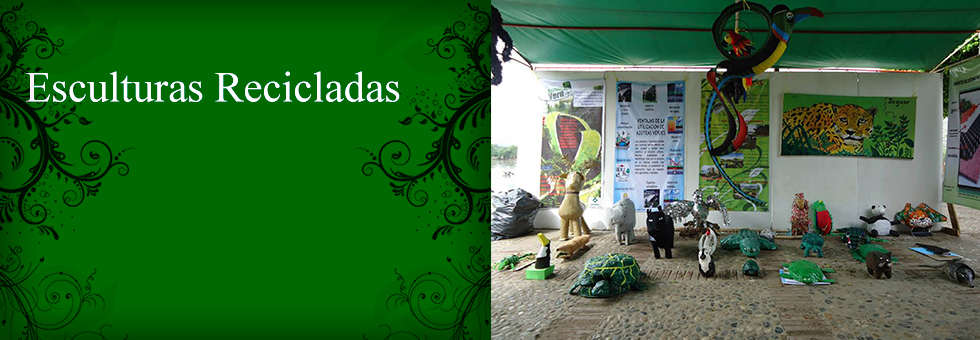
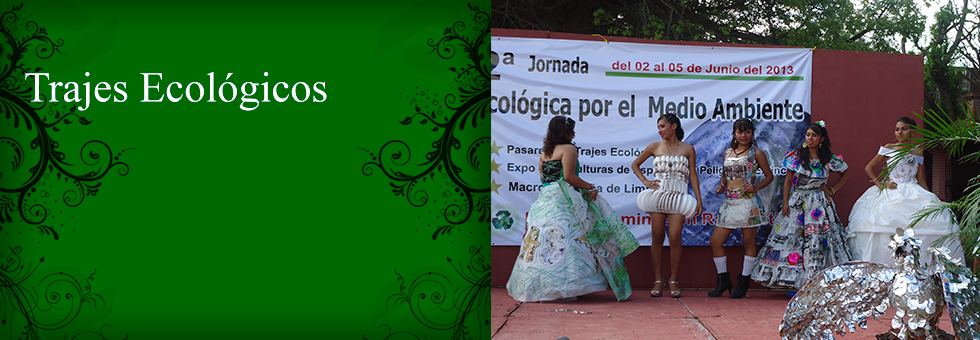

-
 Conalep Chiapa de Corzo festejo a las mamás en su día, con la
Conalep Chiapa de Corzo festejo a las mamás en su día, con la
participación de la marimba de Chiapa de Corzo, alumnos y maestros. -
Conalep Chiapa de Corzo festejo a los alumnos en su día, con la
participación de los maestros quienes fueron los que organizaron este evento. - El cual se llevara a cabo en los laboratorios del área en informática el día 30 de mayo del 2014.
- El cual se llevara a cabo en los laboratorios del área en informática el día 05 de junio del 2014.
- En conmemoración al Día Mundial del Medio Ambiente, llevado a cabo en las majestuosas aguas del Rio Grijalva.
- En conmemoración al Día Mundial del Medio Ambiente, llevado a cabo en las majestuosas aguas del Rio Grijalva.
- En conmemoración al Día Mundial del Medio Ambiente, llevado a cabo en las majestuosas aguas del Rio Grijalva.